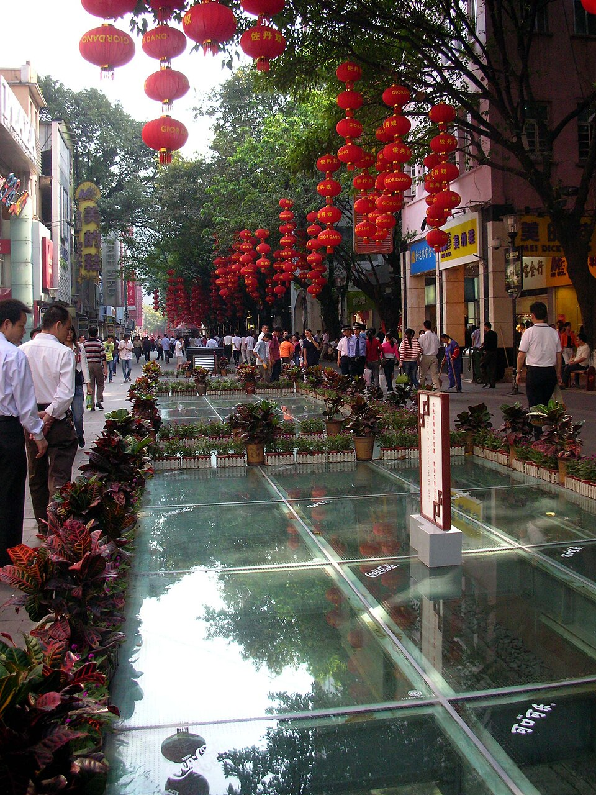

Tianhe / Taikoo Hui
Polished Guangzhou shopping in the Tianhe commercial district.
Photo: Cara Chow (Charlotte1125) · CC BY-SA 2.5 · sourceA dedicated Guangzhou day focused on shopping and food, returning to the same Shenzhen hotel at night.

A visual preview of each stop.